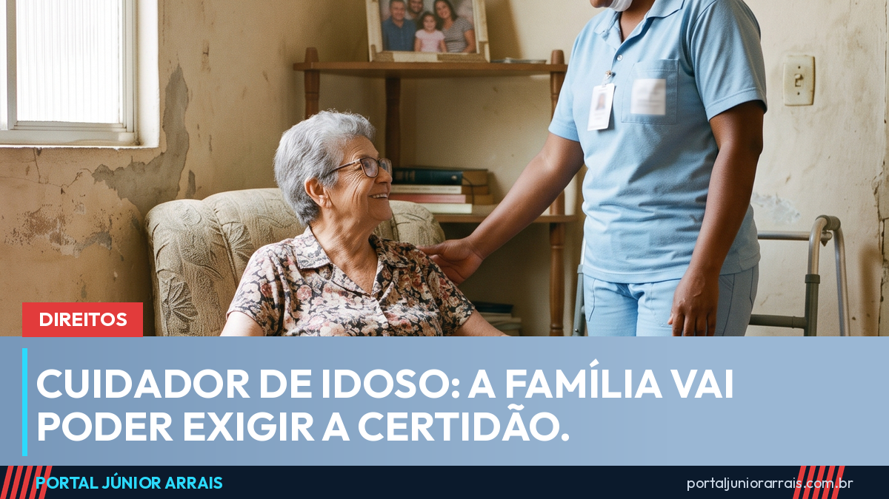

Família vai poder exigir certidão de antecedentes criminais do cuidador de idoso

A Comissão de Defesa dos Direitos da Pessoa Idosa da Câmara dos Deputados aprovou, em 17 de agosto de 2026, um projeto que deixa expresso o direito de a família pedir a certidão de antecedentes criminais do cuidador antes de contratar — ou mesmo durante o contrato, se surgir alguma dúvida.
O que o texto permite dentro de casa
Hoje, quem contrata um cuidador para acompanhar um pai, uma mãe ou um avô costuma se guiar pela indicação de conhecidos. O texto aprovado dá respaldo claro para ir além disso: o contratante pode exigir a certidão independentemente do tipo de vínculo — diarista, mensalista, com carteira assinada ou por intermédio de agência.
A relatoria ficou com o deputado Weliton Prado (PSD-MG), que reuniu num só texto dois projetos que tratavam do assunto, o PL 731/2024 e o PL 1488/2024.
Nas instituições, a exigência passa a ser obrigatória
A regra fica mais rígida fora do ambiente doméstico. Instituições públicas e privadas que recebem verba pública ficam obrigadas a exigir a certidão e a atualizá-la a cada seis meses. As demais organizações precisam manter fichas cadastrais e certidões em dia de todos os colaboradores e voluntários.
O alcance é amplo: vale para toda pessoa contratada ou voluntária que exerça cargo, função ou ocupação voltada à prestação de serviço a pessoas idosas. Isso inclui casas de repouso, centros-dia e projetos de atendimento mantidos por igrejas e associações.
Atenção: ainda não está valendo
Esse é o ponto que mais gera confusão. A aprovação foi em comissão, não em plenário. O projeto ainda passa pela Comissão de Constituição e Justiça e de Cidadania e depois precisa ser votado pela Câmara e pelo Senado antes de virar lei.
Ou seja: quem vir por aí um vídeo dizendo que "já foi aprovado, agora é obrigatório", está diante de informação apressada. Enquanto a lei não sai, nada impede que a família peça o documento ao candidato à vaga — o que muda com o projeto é o respaldo expresso e a obrigação para as instituições.
Cuidado com golpe
Sempre que um assunto assim ganha repercussão, aparecem sites e perfis oferecendo emissão de certidão mediante pagamento por Pix, com promessa de sair "na hora" e "sem burocracia". É armadilha conhecida: além de levar o dinheiro, o golpista fica com o CPF, o nome completo e a data de nascimento de quem preencheu o formulário. Nenhum órgão público cobra taxa por Pix nem pede senha ou foto de documento por WhatsApp para emitir certidão.
Se a dúvida for sobre como formalizar o contrato do cuidador, quais são as obrigações trabalhistas da família contratante ou o que fazer diante de um caso concreto de maus-tratos contra pessoa idosa, o caminho seguro é procurar um profissional de sua confiança para analisar a situação.
Conteúdo informativo — não substitui orientação individualizada sobre o seu caso.